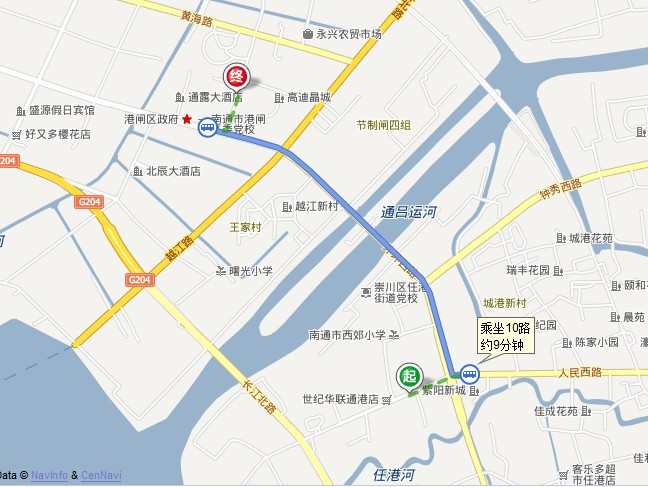
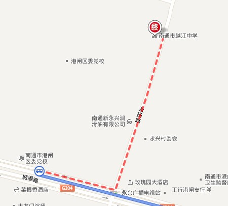
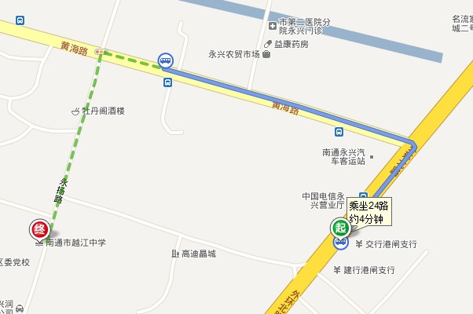
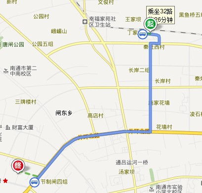
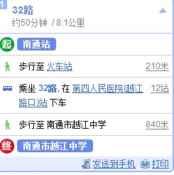

关于举办2011年苏沪五子棋精英邀请赛的通知（名单已经确定）
#1 关于举办2011年苏沪五子棋精英邀请赛的通知（名单已经确定） 作者：黄药师 发表时间：2011-8-4 10:39:05
关于举办2011年苏沪五子棋精英邀请赛的通知
为进一步增进苏沪两地五子棋交流，提高棋手水平，展示五子棋魅力，经研究决定与 2011 年 8 月 12-14 日在南通市举办 2011 年苏沪五子棋精英邀请赛活动。
上海市围棋协会五子棋委员会
南通市棋类协会
［此帖子已被 黄药师 在 2011-8-5 20:08:07 编辑过］
#2 Re:关于举办2011年苏沪五子棋精英邀请赛的通知 作者：黄药师 发表时间：2011-8-4 10:39:50
2011 年苏沪五子棋精英邀请赛竞赛规程
一、主办单位：苏沪五子棋精英赛组委会
二、承办单位：南通市棋类协会
三、比赛时间： 2011 年 8 月 12-14 日
四、比赛地点：南通市越江中学
五、参赛资格：受邀请对象，总人数不超过 24 人
六、竞赛办法
本次比赛采用国家体育总局棋牌运动管理中心最新审定的《中国五子棋竞赛规则》，七轮积分编排制，每方用时
#3 Re:关于举办2011年苏沪五子棋精英邀请赛的通知 作者：黄药师 发表时间：None
日程安排
10:30 - 12:30 第二轮
by:web版  IP：
已记录
IP：
已记录
#4 Re:关于举办2011年苏沪五子棋精英邀请赛的通知 作者：梧桐风 发表时间：2011-8-4 10:41:13
其他省的只能围观？能参加么？#5 Re:关于举办2011年苏沪五子棋精英邀请赛的通知 作者：黄药师 发表时间：None
选手名单
上海代表队：
#6 Re:关于举办2011年苏沪五子棋精英邀请赛的通知 作者：天籁之琴 发表时间：2011-8-4 10:44:25
有哪些选手报名了？
#7 Re:关于举办2011年苏沪五子棋精英邀请赛的通知 作者：黄药师 发表时间：2011-8-4 10:46:02
三楼你抢我地盘啊！！！！我还没有发完！！！！#8 Re:Re:关于举办2011年苏沪五子棋精英邀请赛的通知 作者：游戏人间 发表时间：2011-8-4 11:42:33
引用：
原文由 梧桐风 发表于 2011-8-4 10:41:13 :
其他省的只能围观？能参加么？
#9 Re:关于举办2011年苏沪五子棋精英邀请赛的通知 作者：小元 发表时间：2011-8-4 11:50:24
地区间还是打对抗赛更具有看点#10 Re:关于举办2011年苏沪五子棋精英邀请赛的通知 作者：高飞 发表时间：2011-8-4 12:22:34
上海队很庞大 ~~~#11 Re:关于举办2011年苏沪五子棋精英邀请赛的通知 作者：我是裁判 发表时间：2011-8-4 19:14:14
支持！祝贺！希望上海能带动扶持南通的发展。
［ 黄药师 于 2011-8-4 20:04:28 时花20金币送鲜花一朵］
#12 Re:关于举办2011年苏沪五子棋精英邀请赛的通知（名单已经确定） 作者：黄药师 发表时间：2011-8-5 20:08:29
最后的名单已经确定！#13 Re:关于举办2011年苏沪五子棋精英邀请赛的通知（名单已经确定） 作者：我是裁判 发表时间：2011-8-5 21:24:54
本人仲裁主任#14 Re:关于举办2011年苏沪五子棋精英邀请赛的通知（名单已经确定） 作者：山巅一士 发表时间：2011-8-5 23:14:52
作为南通的五子棋爱好者可以去观战吗
#15 Re:关于举办2011年苏沪五子棋精英邀请赛的通知（名单已经确定） 作者：雅匪 发表时间：2011-8-6 1:45:13
狠真诚的挣本帖最后10块#16 Re:关于举办2011年苏沪五子棋精英邀请赛的通知（名单已经确定） 作者：一期一会 发表时间：2011-8-6 3:32:28
 上海队阵容太华丽太恐怖了，某狮带着惴惴不安的心情，即将踏上一条死亡之旅，上天保佑某狮少挨几刀吧！
上海队阵容太华丽太恐怖了，某狮带着惴惴不安的心情，即将踏上一条死亡之旅，上天保佑某狮少挨几刀吧！［ 黄药师 于 2011-8-6 11:32:30 时花20金币送鲜花一朵］
#17 Re:关于举办2011年苏沪五子棋精英邀请赛的通知（名单已经确定） 作者：梧桐风 发表时间：2011-8-6 7:28:14
狮子姐携神农架的屠龙刀出征第一站啦#18 Re:Re:关于举办2011年苏沪五子棋精英邀请赛的通知 作者：天籁之琴 发表时间：2011-8-6 7:33:59
江苏队加油
#19 Re:关于举办2011年苏沪五子棋精英邀请赛的通知（名单已经确定） 作者：风趣幽默 发表时间：2011-8-6 8:39:08
上海队这次太恐怖了，精英尽出！江苏的几个也是个顶个的高手！可怜我和南通的这帮小朋友了。人为刀俎，我为鱼肉！痛并快乐着！［ 飞翔 于 2011-8-6 12:13:42 时花20金币送鲜花一朵］
［ 黄药师 于 2011-8-6 23:21:12 时奖励此帖[金币加 100 威望加1］
#20 Re:关于举办2011年苏沪五子棋精英邀请赛的通知（名单已经确定） 作者：飞翔 发表时间：2011-8-6 9:48:21
可以来观战否。。。#21 Re:关于举办2011年苏沪五子棋精英邀请赛的通知（名单已经确定） 作者：清风明月月 发表时间：2011-8-6 10:28:14
江苏队加油
#22 Re:Re:关于举办2011年苏沪五子棋精英邀请赛的通知（名单已经确定） 作者：黄药师 发表时间：2011-8-6 11:30:59
引用：欢迎，欢迎！！
原文由 山巅一士 发表于 2011-8-5 23:14:52 :作为南通的五子棋爱好者可以去观战吗
#23 Re:Re:关于举办2011年苏沪五子棋精英邀请赛的通知（名单已经确定） 作者：黄药师 发表时间：2011-8-6 11:31:59
引用：飞翔是我们的老朋友了，当然欢迎了！
原文由 飞翔 发表于 2011-8-6 9:48:21 :
可以来观战否。。。
#24 Re:关于举办2011年苏沪五子棋精英邀请赛的通知（名单已经确定） 作者：掌棋宣传员 发表时间：2011-8-6 11:40:41
精彩竞猜~#25 Re:关于举办2011年苏沪五子棋精英邀请赛的通知（名单已经确定） 作者：傀儡 发表时间：2011-8-9 10:22:10
 世锦赛结束后又有得关注了~~~
世锦赛结束后又有得关注了~~~［ 黄药师 于 2011-8-9 12:13:34 时花20金币送鲜花一朵］
#26 Re:关于举办2011年苏沪五子棋精英邀请赛的通知（名单已经确定） 作者：一期一会 发表时间：2011-8-9 20:44:43
 问一下，报道的具体地点在哪里？还有，南京到南通坐火车性价比高还是坐汽车？
问一下，报道的具体地点在哪里？还有，南京到南通坐火车性价比高还是坐汽车？
#27 Re:Re:关于举办2011年苏沪五子棋精英邀请赛的通知（名单已经确定） 作者：黄药师 发表时间：2011-8-9 21:08:00
引用：
原文由 一期一会 发表于 2011-8-9 20:44:43 :
汽车大概要90元，速度好像快点。
火车软座要67元，速度慢点。
火车大概4小时15分可以到，汽车大概可以提前30分钟的样子！
#28 2011年苏沪五子棋精英邀请赛地点图示 作者：黄药师 发表时间：2011-8-9 21:15:03


如果是到达长途汽车站，那么根据上图乘坐 10路在 第四人民医院(越江路口)站 下车步行至 南通市越江中学
如果是达到永兴汽车总站，那么根据下图可以到达！其实到了永兴汽车总站，打个电话，开车都可以来接你了！5分钟都不用

［此帖子已被 黄药师 在 2011-8-9 21:18:45 编辑过］
#29 Re:关于举办2011年苏沪五子棋精英邀请赛的通知（名单已经确定） 作者：一期一会 发表时间：2011-8-9 21:34:26
穷啊！偶打算坐火车，第一张图么？#30 Re:Re:关于举办2011年苏沪五子棋精英邀请赛的通知（名单已经确定） 作者：黄药师 发表时间：2011-8-9 21:47:54
引用：
原文由 一期一会 发表于 2011-8-9 21:34:26 :
穷啊！偶打算坐火车，第一张图么？
上面都是汽车路线！
再发个火车路线吧！


坐汽车到了第四人民医院那边，打电话，就可以来接你了，5分钟就能到！
实在不认识打电话，我们想法办法来接你！手机号码已经短消息发给你了！
［此帖子已被 黄药师 在 2011-8-9 21:49:26 编辑过］
#31 Re:Re:关于举办2011年苏沪五子棋精英邀请赛的通知（名单已经确定） 作者：奇林 发表时间：2011-8-9 23:26:35
引用：我猜狮子对男子保持不败 对女子保持不胜
原文由 掌棋宣传员 发表于 2011-8-6 11:40:41 :
精彩竞猜~
#32 Re:关于举办2011年苏沪五子棋精英邀请赛的通知（名单已经确定） 作者：傀儡 发表时间：2011-8-11 10:15:01
等着狮子姐姐发威~~~~
#33 Re:关于举办2011年苏沪五子棋精英邀请赛的通知（名单已经确定） 作者：无尽 发表时间：2011-8-12 19:59:18
顶一下，及时传递信息哦
#34 Re:关于举办2011年苏沪五子棋精英邀请赛的通知（名单已经确定） 作者：我是裁判 发表时间：2011-8-12 20:09:38
没有人邀请我